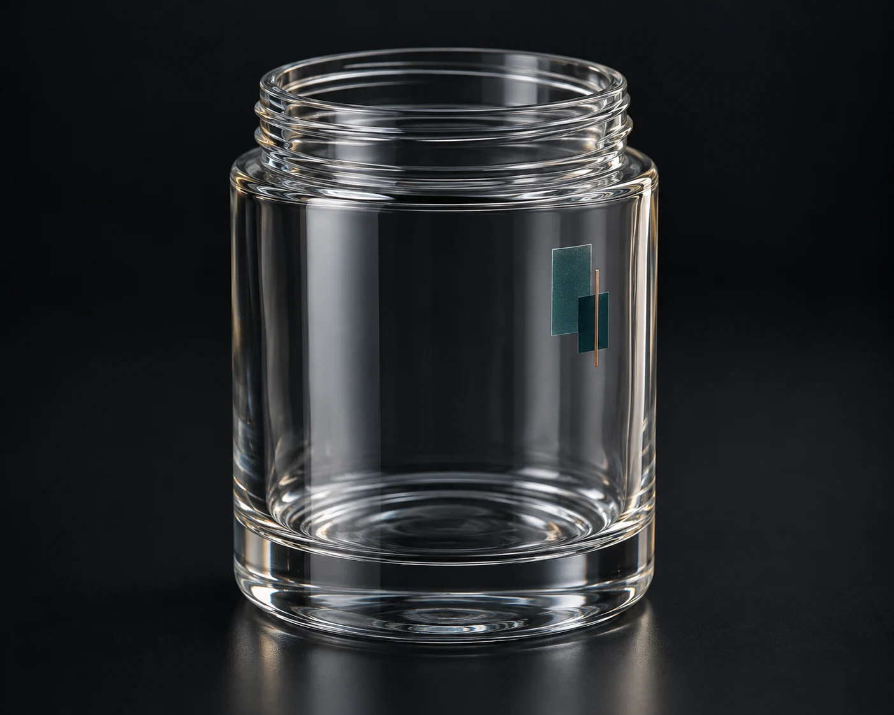

Material evidence
Glass
Dedicated imagery is shown only where an approved asset exists.

01
Glass
Assessment required
Candidate process is not production approval.
COMMON FORMS / VARIANTS
PROCESS CANDIDATES
REVIEW VARIABLES
WHAT HDC NEEDS